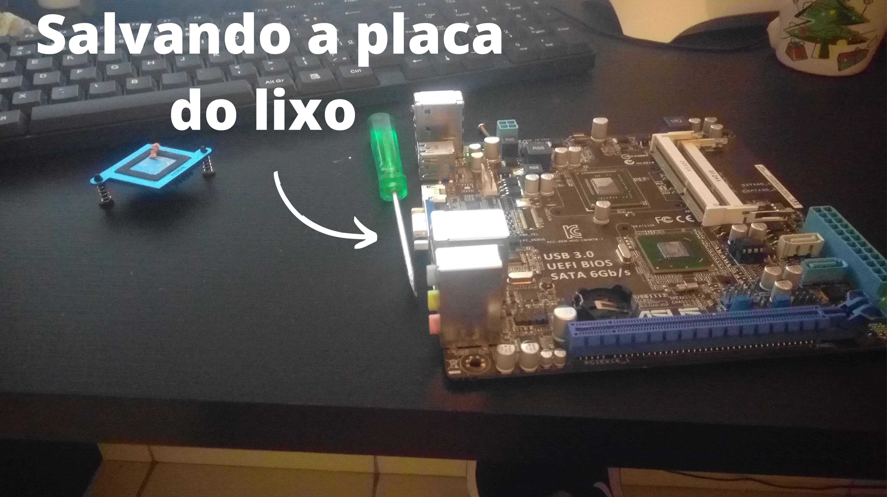
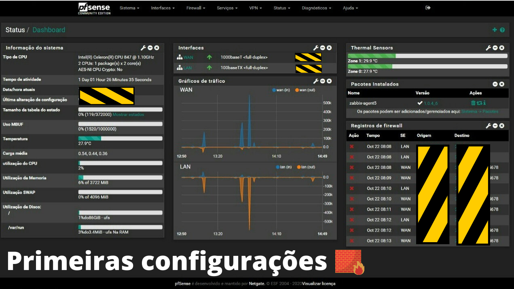

Nesse post irei te mostrar como montei um potente firewall para controle, gerenciamento e segurança de minha rede local usando o pfSense.
Caso queira saber mais sobre a tecnologia que estou usando clique aqui para acessar o site e tirar sua duvidas sobre.
Por que eu escolhi o pfSense ?
Pessoalmente estava bastante pensativo entre 3 soluções firewall, que eram o pfSense, OPNsense, e o mikrotik. Porem como o mikrotik é uma solução que necessita de licença para utilização do RouterOS, que é o software da mikrotik usado para roteamento, ou precisaria adquirir uma RB da marca para utlizar esse serviço, isso fez com que eu mudasse de ideia e ficasse entre o pfSense e o OPNsense, que apesar dos nomes e funcionalidades bem parecidas, são excelentes serviços onde cada um tem suas particularidades, por fim acabei decidindo testar o pfSense primeiro. Caso queira conhecer mais sobre as tecnologias que citei nesse paragrafo, clique nos links abaixo.
pfSense
OPNsense
Mikrotik
Hardware utilizado.
Como o pfSense tem exigencias minimas muito baixas, é possivel extrair muito desempenho com muito pouco recurso de hardware, abaixo vemos um print do site da pfSense com os requisitos minimos e o recomendado para utilização do serviço.
O hardware que utilizei para esse servidor, foi uma placa mãe ASUS MINI-ITX C8HM70-I com CPU DUAL CORE CELERON 847 de 1.1GHZ. A placa era de um amigo proximo que estava prestes a jogar a placa no lixo, pois não há utilizava mais.
Como eu já tinha a memoria ram, a placa de rede, e o HD, eu iria precisar apenas comprar um gabinete e uma fonte atx, para ligar a placa e botar o projeto para funcionar, então bora comprar o hardware restante.
Como era a rede antes do firewall.
Antes minha rede local era apenas uma ONU onde eu recebia meu link de fibra optica, e um roteador fraquinho que distribuía o wifi para a casa e computadores, quem fornecia DHCP para a rede era apenas a ONU que é conectada diretamente ao provedor, ou seja não havia nada para proteção de minha rede local, não tinha como definir regras de segurança, controle de trafego e alterar configurações básicas de roteamento e etc.
Instalação do pfSense.
Para instalação utilizei um pen drive com a imagem do sistema, que realizei o download no proprio site da pfSense e a instalação é bem rapida e simples, porem durante a instalação é necessario configurações basicas das interfaces de rede, DNS, DHCP e entre outras configurações de rede.
Testando tudo.
Testando tudo fora do gabinete, antes de montar, para testes em relação ao desempenho e para mutenções basicas caso ocorra algum erro.
Acessando a interface web.
Após testarmos o hardware, instalarmos a imagem do pfSense, e realizado as configurações basicas das interfaces de rede. Use um computador conetado na saida LAN do nosso firewall, acesse a interface web do firewall por meio do IP da interface LAN, para realizarmos as demais configuração por meio da interface web. Após aplicar suas configurações, você pode estar montando uma dashboard para visualização do desempenho de seu firewall e serviços que podem ser incluidos no firewall, como vemos na imagem abaixo.
Firewall finalizado.
Abaixo vemos o firewall finalizado e funcioando 24/7 em meu apartamento, hoje tenho o controle do reteamento de pacotes da minha rede LAN, posso incluir regras de segurança, serviços como opn-vpn, proxy com squid, e monitora-lo através do zabbix instalado na nuvem.
Considerações.
Eu particularmente achei o pfSense muito potente, como não entendia muito sobre a tecnologia cheguei a comprar um curso de R$30,00 reais na udemy, porem caso você não tenha condições de comprar um curso, tem bastante material na internet de forma gratuita, o curso me ajudou a entender como configurar determinados serviços e configurações avançadas do pfSense, e o que mais me impressionou foi consumo de hardware é baixissimo, cheguei a aplicar ataques a fim de testa-lo e no maximo que eu vi chegar foi a 30% de consumo de CPU, porem a maior parte do tempo o firewall fica com um consumo de 2% á 5% de utilização de CPU.